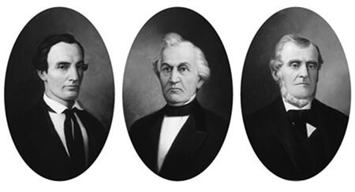

Who are the “nations of the Gentiles” in this context? (27:1) “Both Lehi and Nephi divide all men into two camps, Jews and Gentiles. The Jews were either the nationals of the kingdom of Judah or their descendants; all others were considered to be Gentiles. Thus, we are the Gentiles of whom this scripture speaks; we are the ones who have received the fulness of the gospel; and we shall take it to the Lamanites, who are Jews, because their fathers came from Jerusalem and from the kingdom of Judah” (McConkie, New Witness, 556).
Why are nations compared to a “dream of a night vision” and hungry and thirsty men? (27:2–3) In the last days God’s “judgments will come upon the wicked after they have rejected the testimonies of the Church’s prophets and missionaries” and, like “the Babylonians, Romans, . . . after their day of might and dominance, will fade away as a dream vanishes during the night. . . . The nations that fight against Jerusalem and Zion will, in the end, have no more lasting satisfaction than does a hungry person who only dreams of eating” (Parry et al., Understanding Isaiah, 262–63).
Why is the name Ariel found in Isaiah 29:7 changed to Zion here? (27:3) “King James ‘Ariel,’ a poetic term for Jerusalem, is not to be found in the 2 Nephi 27:3 quotation of Isaiah 29:7. However, it is also absent from the Jewish Aramaic Targum—which replaces it with ‘the City.’ The Book of Mormon reads Zion instead. This fits well, however, since ‘Mount Zion’ appears at the end of the verse (Isaiah 29:8), and ‘Zion’ and ‘Mount Zion’ parallel each other here” (Smith, “Textual Criticism of the Book of Mormon,” 78).
Who are they who have slumbered? (27:6) To slumber or sleep is a “metaphor for death (1 Cor. 15:6)” (McConkie, Gospel Symbolism, 272) and refers to “the Jaredites and Nephites [who] have slumbered in the dust, or have died and their bodies have returned to the dust” (Parry et al., Understanding Isaiah, 266).
What was the sealed book, and why was it sealed? (27:7–8) The sealed book “seems to refer to the portion of the golden plates that was sealed. Sacred records have been sealed up many times in religious history (Dan. 12:1, 4; Rev. 5:1-14; 1 Ne. 14:26; Ether 3:21-22). . . . The sealed portion of the plates will be revealed in the Lord’s own time, but not in the day of wickedness” (Parry et al., Understanding Isaiah, 266).
Who is the man to whom ”the words of the book” will be delivered? (27:9) This prophecy of Nephi “apparently refers (1) to Joseph Smith’s giving a copy of some of the characters to Martin Harris and (2) to the subsequent visit of Martin Harris with Professor Charles Anthon [see 2 Nephi 27:15]. Sometime between December 1827 and February 1828, Joseph Smith copied a number of the characters from the plates in his possession and translated some of them by means of the Urim and Thummim. In February 1828, Martin Harris visited the Prophet in Pennsylvania, obtained a transcript of the characters, and took it to Professor Charles Anthon of New York City” (Ludlow, Companion to Your Study of the Book of Mormon, 147–48).
How will this book be read from housetops? (27:11) Some suggest that “Joseph Smith’s translation of the Book of Mormon fulfills this prophecy. The book was translated by the power of the Lord. So it would be ‘read by the power of Christ.’ The missionary effort of spreading the gospel fulfills the prediction that it ‘shall be read upon the house tops’” (Gardner, Second Witness, 2:382).
An early fulfillment of this prophecy is found in the following account: “On Sunday, March 31, 1935, President Heber J. Grant, at 12:30 a.m., read a message from the Latter-day Saints to the people of the entire world which may well be regarded as the beginning of the literal fulfilment of this prophecy in 2 Ne. 27:11, in as much as it was broadcast by radio and consisted of a masterly resume of the essence of ‘Mormonism.’ President Grant said, in part:
“‘What the world needs today more than anything else is an implicit faith in God, our Father, and in Jesus Christ, his Son, as the Redeemer of the world. The message of The Church of Jesus Christ of Latter-day Saints to the world is that God lives, that Jesus Christ is his Son, and that they appeared to the boy Joseph Smith, and promised him that he should be an instrument in the hands of the Lord in restoring the true Gospel to the world. I quote from a Vision given to Joseph Smith and Sidney Rigdon:
“‘“And this is the Gospel, the glad tidings, which the voice of the heavens bore record unto us—
“‘“That he came into the world, even Jesus, to be crucified for the world, and to bear the sins of the world, and to sanctify the world, and to cleanse it from all unrighteousness;
“‘“That through him all might be saved whom the Father had put into his power and made by him.
“‘“Who glorifies the Father, and saves all the works of his hands, except those sons of perdition who deny the Son after the Father has revealed him.
“‘“And again from the same Vision:
“‘“And we beheld the glory of the Son, on the right hand of the Father, and received of his fulness;
“‘“And saw the holy angels, and them who are sanctified before his throne worshiping God, and the Lamb, who worship him forever and ever.
“‘“And now, after the many testimonies which have been given of him, this is the testimony, last of all, which we give of him: That he lives!
“‘“For we saw him, even on the right hand of God; and we heard the voice bearing record that he is the Only Begotten of the Father—
“‘“That by him, and through him, and of him, the worlds are and were created, and the inhabitants thereof are begotten sons and daughters unto God.
“‘It has been my great privilege to bear this testimony in England, Ireland, Scotland, Wales, Germany, France, Holland, Belgium, Switzerland, Italy, Norway, Sweden, Denmark, Canada, Mexico, in the Hawaiian Islands and in far-off Japan, and to lift up my voice declaring that our Heavenly Father and his beloved Son have again spoken from the heavens, that the Gospel of our Redeemer has been restored to the earth, and to bear witness that I know that God lives, that I know that Jesus is the Christ, the Son of the living God and the Redeemer of mankind, and that I know that Joseph Smith was the instrument in the hands of the Lord in restoring the everlasting Gospel.
“‘My appeal to all members of the Church who possess this same testimony is so to live that other men seeing their good deeds shall be inspired to investigate the Gospel of our Redeemer.
“‘Words fail me in expressing my heartfelt gratitude to God for the radio, which gives me this opportunity of bearing my testimony to all the people of the world of the restoration of the Gospel of Jesus Christ. I pray the Lord to bless all mankind in these troublous times, that wisdom may be given to men in every land so to live that peace may come to the peoples of the world’ (President Heber J. Grant, Annual Conference Report, April, 1935, 9, 10)” (Reynolds and Sjodahl, Commentary on the Book of Mormon, 1:401–2).
Who were the witnesses to the Book of Mormon plates? (27:12–14) “In 2 Nephi 27:12 the three persons who should behold the record ‘by the power of God’ evidently are the three special witnesses. In their testimony they declared they had seen an angel, had heard the voice of the Lord, and had been shown the plates ‘by the power of God, and not of man.’
“In 2 Nephi 27:13, the few other witnesses who should view the record ‘according to the will of God, to bear testimony of his word unto the children of men’ evidently include the eight special witnesses” (Ludlow, Companion to Your Study of the Book of Mormon, 149).
“The Lord ordained the law of witnesses. Explaining that law, Paul wrote: ‘In the mouth of two or three witnesses shall every word be established’ (2 Corinthians 13:1; cf. Deuteronomy 19:15). Thus, in the establishment of his latter-day kingdom, the Lord chose to share the burden of proof, to spread the weight of testimony, among more than his chosen Prophet. In speaking to future generations—and specifically to the seer of the last days, Joseph Smith—Moroni wrote: ‘And behold, ye may be privileged that ye may show the plates unto those who shall assist to bring forth this work; and unto three shall they be shown by the power of God; wherefore they shall know of a surety that these things are true’ (Ether 5:2–3).
“‘In the course of the work of translation,’ Joseph Smith wrote, ‘we ascertained that three special witnesses were to be provided by the Lord, to whom He would grant that they should see the plates from which this work (the Book of Mormon) should be translated; and that these witnesses should bear witness of the same. . . . Almost immediately after we had made this discovery, it occurred to Oliver Cowdery, David Whitmer and the aforementioned Martin Harris (who had come to inquire after our progress in the work) that they [should] have me inquire of the Lord to know if they might not obtain of him the privilege to be these three special witnesses; and finally they became so very solicitous, and urged me so much to inquire that at length I complied; and through the Urim and Thummim, I obtained of the Lord for them the following’ (History of the Church,1:52–53). Section 17 of the Doctrine and Covenants follows, a revelation given to the three men whose testimony would accompany every copy of the Book of Mormon. In that revelation the Savior said: ‘Behold, I say unto you, that you must rely upon my word, which if you do with full purpose of heart, you shall have a view of the plates, and also the breastplate, the sword of Laban, the Urim and Thummim . . . and the miraculous directors which were given to Lehi while in the wilderness, on the borders of the Red Sea. And it is by your faith that you shall obtain a view of them, even by that faith which was had by the prophets of old. And after that you have obtained faith, and have seen them with your eyes, you shall testify of them, by the power of God’ (D&C 17:1–3).
“After the three witnesses had been visited by the angel Moroni, after they had been shown the Book of Mormon plates and had heard the voice of God bearing witness of the sacred record and commanding them thereafter to bear a like witness, the burden of Joseph the Prophet was immeasurably lighter. His mother, Lucy Mack Smith, wrote: ‘When they returned to the house [after their experience with the angel and the plates] it was between three and four o’clock p.m. Mrs. Whitmer, Mr. Smith [Joseph Smith, Sr.] and myself, were sitting in a bedroom at the time. On coming in, Joseph threw himself down beside me, and exclaimed, “Father, mother, you do not know how happy I am: the Lord has now caused the plates to be shown to three more besides myself. They have seen an angel, who has testified to them, and they will have to bear witness to the truth of what I have said, for now they know for themselves, that I do not go about to deceive the people, and I feel as if I was relieved of a burden which was almost too heavy for me to bear, and it rejoices my soul, that I am not any longer to be entirely alone in the world.” Upon this, Martin Harris came in: he seemed almost overcome with joy, and testified boldly to what he had both seen and heard. And so did David and Oliver, adding that no tongue could express the joy of their hearts, and the greatness of the things which they had both seen and heard’ (History of Joseph Smith by His Mother, 152–53; see 2 Nephi 29:8).
“The eight witnesses—Christian Whitmer, Jacob Whitmer, Peter Whitmer, Jr., John Whitmer, Hiram Page, Joseph Smith, Sr., Hyrum Smith, and Samuel H. Smith—obtained a view of the plates near the Smith home in Manchester. ‘It was on the occasion of the Prophet Joseph’s coming over to Manchester from Fayette, accompanied by several of the Whitmers and Hiram Page, to make arrangements about getting the Book of Mormon printed. After arriving at the Smith residence, Joseph Smith, Sen., Hyrum Smith, and Samuel H. Smith, joined Joseph’s company from Fayette, and together they repaired to a place in the woods where members of the Smith family were wont to hold secret prayer, and there the plates were shown to these eight witnesses by the Prophet himself’ (History of the Church, 1:58, note)” (McConkie and Millet, Doctrinal Commentary, 1:318–20).
What does “sealed” mean? (27:15) “A distinctive legal practice in Israel around 600 b.c. was the use of doubled, sealed, and witnessed documents. These documents had two parts: one was left open for ready access while the other was sealed up for later consultation by the parties. . . . Witnesses were necessary, and their numbers could vary. . . . When and by whom could these seals be opened? It appears that only a judge or another authorized official could break the seals and open the document. . . . Similarly, Nephi envisioned the final Nephite record as having two parts, one sealed and the other not sealed (2 Nephi 27:8, 15)” (Welch, “Doubled, Sealed, and Witnessed Documents”).
How was this ancient prophecy fulfilled? (27:15–18) “Here is the prophetic word which attests that Martin Harris’s trip to New York was based upon more than his own curiosity or desire for academic substantiation for the Book of Mormon translation. Joseph Smith was commanded of the Lord to send another to New York, and Joseph sent Martin Harris.
“Charles Anthon was indeed a learned man by the world’s standards: he was a professor of classics—Greek and Latin—at Columbia University in New York” (McConkie and Millet, Doctrinal Commentary, 1:322).
“For an account of what occurred, we have the following statement made by Martin Harris to Joseph Smith:
“‘I went to the city of New York, and presented the characters which had been translated, with the translation thereof, to Professor Charles Anthon, a gentlemen celebrated for his literary attainments. Professor Anthon stated that the translation was correct, more so than any he had before seen translated from the Egyptian. I then showed him those which were not yet translated, and he said that they were Egyptian, Chaldaic, Assyriac, and Arabic; and he said they were true characters. He gave me a certificate, certifying to the people of Palmyra that they were true characters, and that the translation of such of them as had been translated was also correct. I took the certificate and put it into my pocket, and was just leaving the house, when Mr. Anthon called me back, and asked me how the young man found out that there were gold plates in the place where he found them. I answered that an angel of God had revealed it unto him.
“‘He then said to me, “Let me see that certificate.” I accordingly took it out of my pocket and gave it to him, when he took it and tore it to pieces, saying that there was no such thing now as ministering of angels, and that if I would bring the plates to him he would translate them. I informed him that part of the plates were sealed, and that I was forbidden to bring them. He replied, “I cannot read a sealed book.” I left him and went to Dr. Mitchell, who sanctioned what Professor Anthon had said respecting both the characters and the translation (Joseph Smith–History 1:64–65).’
“This experience apparently convinced Martin Harris that Joseph Smith was a prophet and that he had the gold plates. Thus he later served as a scribe for Joseph Smith during the translation of part of the Plates of Mormon, was privileged to be one of the three special witnesses, and was willing to mortgage his farm to raise money for the first edition of the Book of Mormon” (Ludlow, Companion to Your Study of the Book of Mormon, 149).
Brigham Young University Professor Richard E. Bennett outlined a fuller account of Martin Harris’s visit to New York:
“My purpose is to share with you new light on a very important episode in our history. In 1970 the late Stanley B. Kimball published an article in BYU Studies in which he examined the significance of the so-called ‘Anthon Transcript,’ the identity of the leading scholars who Martin Harris consulted in February 1828, and why Harris returned so committed to financing the printing of the Book of Mormon. My specific purpose in delivering this much abridged version of a longer study I have recently published is to reveal the identity of the three ‘wise men’ Harris visited—Luther Bradish, Charles Anthon, and Samuel L. Mitchill—and what in their background, training, and personalities uniquely prepared them for Harris’s visit and why Harris left New York so resolved to pay for the Book of Mormon’s printing . . . ?
“We may never know the full extent of the conversations Martin Harris had with Luther Bradish, Samuel Mitchill, or Charles Anthon that winter of 1828. While it is probably safe to say that the discussions between Harris and Anthon will ever prove more popular among Latter-day Saint readers as a fulfillment of prophecy, the fact remains that Harris found encouragement to pursue his sponsorship of the Book of Mormon not only from Anthon. It may well be that the secondary characters in this story—Luther Bradish and Samuel L. Mitchill—were far more important than we have previously supposed” (“Martin Harris and Three Wise Men”).
Why would the learned man request that the sealed book be delivered to him? (27:16–18) “The Lord gave the world’s ‘learned’ an opportunity to accept or reject the words of the book. He knew their motivation would be not ‘the glory of God’ but for ‘the glory of the world and to get gain’” (Parry et al., Understanding Isaiah, 268).
In what way was Joseph considered “not learned”? (27:19–20) Joseph Smith is the one Isaiah referred to as “not learned” whom the Lord would empower “read the words” of the book with a sealed portion. Elder Jeffrey R. Holland wrote: “[T]his magnificent book [the Book of Mormon] was translated when Joseph Smith was barely a boy, a lad still coming of age. To paraphrase Winston Churchill, ‘Some boy. Some book’” (Christ and the New Covenant, 344).
Why do you think the Lord commanded Joseph to hide up the plates? (27:21–22) The scriptures record that the Prophet Joseph Smith obediently delivered the plates into the hands of the angel Moroni as commanded (see Joseph Smith–History 1:60). Why would the Lord take away the only tangible evidence that the plates existed? What benefits come to us as we accept the Lord’s will and engage the Book of Mormon on faith? What could be the consequences if people could see the plates and still choose to be disobedient?
Witnesses of the Plates
Three Witnesses
© Intellectual Reserve, Inc. Used by permission.
Left: Oliver Cowdery; Middle: David Whitmer; Right: Martin Harris
Eight Witnesses
Christian Whitmer
Jacob Whitmer
Peter Whitmer, Jr.
John Whitmer
Hiram Page
Joseph Smith, Sr.
Hyrum Smith
Samuel H. Smith
The Lord revealed anciently that he would provide witnesses of the “sealed book” or gold plates from which the Book of Mormon would be translated—this so that Joseph Smith “may not be destroyed” and “that [He] might bring about [His] righteous purposes” (D&C 17:4, 9).
What does this prophecy of Isaiah indicate about the spiritual condition of the people when the Book of Mormon comes forth? (27:25) Isaiah foresaw a time when people would draw near to God with their mouths only: “The essence of this phrase is hypocrisy: to profess one thing but to do another; to pretend to be something one is not, or to declare a belief in something that is not personally practiced. Some of the Lord’s strongest rebukes have been directed at hypocrites whom He has labeled as ‘whited sepulchres’ (whitewashed tombs), serpents, and vipers (see Matthew 23:23–33)” (Brewster, Isaiah Plain and Simple, 167).
What is this “marvelous work”? (27:26) “Isaiah says that the Lord, because of the emptiness of the worship, would perform a ‘marvelous work and wonder,’ by means of which the wisdom of their wise and the understanding of their prudent would perish and be hid; and Nephi applies this language to the coming forth of the Book of Mormon, as the beginning of a marvelous work and wonder, the effects of which would be the humiliation of the wisdom and learning of the world” (Reynolds and Sjodahl, Commentary on the Book of Mormon, 1:399).
Another commentary lists missing insights from Isaiah’s prophecy revealed through the Book of Mormon that would have provided a clearer view of the Restoration. “The last of Isaiah’s writings quoted by Nephi (Isaiah 29) reveals that many important prophecies of the Restoration of the gospel in the latter days are missing from the biblical record. A careful comparison of Isaiah 29 and the same chapter from the brass plates (2 Nephi 27) shows that some of the ‘plain and most precious’ parts that have been ‘taken away’ (1 Nephi 13:26–27) include:
“1. Latter-day context of the prophecy (see 2 Nephi 27:1).
“2. A ‘book’ that Isaiah prophesied would come forth in the last days (v. 6).
“3. The book would be ‘sealed’ (vv. 7–8).
“4. Roles of Moroni and Joseph Smith in bringing forth the Book of Mormon (see vv. 9–10).
“5. ‘Three witnesses’ who would behold the ‘book’ and testify ‘to the truth of the . . . things therein’ (vv. 12–13).
“It is not hard to imagine that by removing these prophecies of the coming Restoration, the adversary schemed to ‘pervert the right ways of the Lord that [he] might blind the eyes and harden the hearts of the children of men’ (1 Nephi 13:27)” (Book of Mormon Student Manual [2009], 97–98).
What was the “counsel” they sought to hide? (27:27) “The Hebrew word sod, usually translated as counsel in the King James Version of the Bible, may also be rendered as secret (see also Amos 3:7). That is, those who ‘seek to hide their counsel from the Lord’ are those who try desperately to hide their secrets, their secret acts from him who sees and knows all things” (McConkie and Millet, Doctrinal Commentary, 1:325–26).
What is significant about this prophecy of Lebanon? (27:28) “This verse also has a symbolic meaning—the forest represents the people of God, and the fruitful field represents their works” (Parry et al., Understanding Isaiah, 272).
“These terms may refer to the reforestation and the agricultural development of Lebanon, or Palestine, at the time of the coming forth of the Book of Mormon. Elder Mark E. Petersen explained: ‘Isaiah indicated that Palestine, long languishing in the grip of the desert, was destined to be turned into a fruitful field in connection with the gathering of the Jews to their homeland. . . . A sacred book was to come forth before that time. . . . Not only did the prophets predict its appearance, but Isaiah set a limit on the time of its publication. That time limit was related to the period when fertility would return to Palestine. Isaiah said that the book would come forth first, and then added that in “a very little while . . . Lebanon shall be turned into a fruitful field” (29:17)’ (Conference Report, Oct. 1965, 61)” (Parry et al., Understanding Isaiah, 272).
What is this book and how will it help the deaf, blind, meek, and poor? (27:29–30) The book is the Book of Mormon. The deaf and blind are those who are not able spiritually to hear God’s word or see His truth. President Ezra Taft Benson declared how the Book of Mormon can change that: “There is a power in the book which will begin to flow into your lives the moment you begin a serious study of the book. You will find greater power to resist temptation. You will find the power to avoid deception. You will find the power to stay on the strait and narrow path” (Teachings of Ezra Taft Benson, 54).
Who are all of these people who will be “cut off” in the last days? (27:31–34) “Both ‘the terrible one’ and ‘the scorner’ are epithets applied to Satan. Because Satan is ‘brought to naught,’ the time period is clearly the last days. With Satan’s powerlessness, the wicked (‘all that watch for iniquity’) also lose their source of inspiration. Binding Satan also checks the iniquity of the wicked” (Gardner, Second Witness, 2:396).
Who is the work of God’s hands? (27:34) “This phrase recalls the mention of clay in [2 Nephi 27:27]. . . . God is the divine sculptor who forms and molds his people into true disciples; we are the work of his hands” (Parry et al., Understanding Isaiah, 273).
How shall those who “err” and “murmur” learn doctrine? (27:35) “Such is the purpose of the Book of Mormon. Members of false churches that err in spirit, who think they have the truth, are brought by the Book of Mormon to the fullness of the gospel. Those who have based their beliefs on isolated verses and obscure passages, and who have wondered and murmured at seeming biblical conflicts, come to learn sound doctrine. . . . All things fall into place because of this new witness for Christ and His gospel, this witness which bears the name of the prophet Mormon” (McConkie, Millennial Messiah, 174–75).
“By making ‘known the plain and precious things which have been taken away’ (1 Ne. 13:40) and by the ‘confounding of false doctrines and laying down of contentions, and establishing peace’ (2 Ne. 3:12), the Book of Mormon will teach true doctrine to those who have erred in spirit. Elder Orson Pratt taught: ‘Oh, how precious must be the contents of a book which shall deliver us from all the errors taught by the precepts of uninspired men! Oh, how gratifying to poor, ignorant, erring mortals who have murmured because of the multiplicity of contradictory doctrines that have perplexed and distracted their minds, to read the plain, pure and most precious word of God, revealed in the Book of Mormon!’ (Orson Pratt’s Works, 278–79)” (Parry et al., Understanding Isaiah, 273–74).
